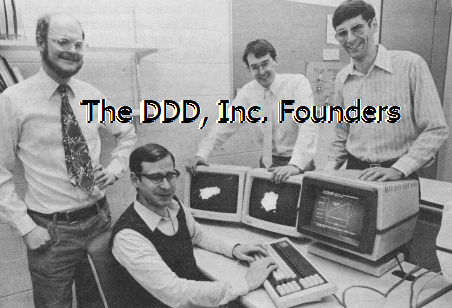
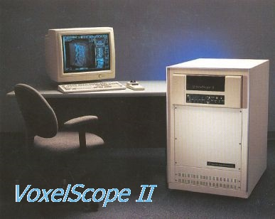
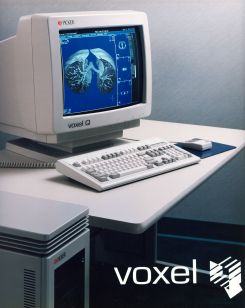
I felt it essential to develop this page so that the experience would not be lost forever as searches find virtually nothing on-line. This Web page is an effort to at least partially remedy that. Unfortunately, this all happened before phone cameras and people felt obligated to take photos or videos of even the most mundane, so no one thought to document any of this beyond what was needed for manuals and Marketing.
My apologies for errors and omissions Ed Walsh has helped a lot with this but I'm sure that not everything is accurate. My memory is quite fuzzy after some 35 years on most of the details so some things may be conflated between versions of the machines. If you feel there is something that should be included (as long as it isn't very controversial) I'll be happy to consider it. Contributions, comments, critiques, and corrections are welcome. If you have an interest in contacting anyone mentioned here, or others known to have been involved in these endeavors, I may be able to hook you up. For any of this, please contact me via the link above.
Archival material used with permission of the copyright owner where possible.
YouTube Videos are also available of the VPP, VS1, VS2, and VQ, converted from VHS (tape!) to .wmv format. If you recall VHS, the quality is terrible compared even to a DVD (never mind HD 4K). The VCR and tapes are over 25 years old and one or both seem to be degrading after a few playings. And the VPP VHS is a dub of a Sony Umatic tape, and they were all transferred by reshooting from a flat screen TV resulting in some sampling artifacts. So no complaints, please. :) But if someone has access to a professional editing facility, it may be possible to recover slightly better quality from these old tapes but it won't be spectacular. There is also at least one other video on the finer points of using Voxelscope II (in case you have one). Ask if interested.
The dates are wild guesses; the times are in minutes:
(These links are also included within their respective sections.)
Thanks to Ed Walsh for his many corrections and suggestions, required to jog my long neglected Voxel-related brain cells (or at those that haven't been recycled). ;-)
I have not included specific names for anyone from real Management (either hired by DDD or the VCs, or associated with Picker) since we no longer have contact with them to get their input. So this is mostly an engineering/technology-centric exposition. And my apologies for not including some of the others who were not directly involved.
Note: Clicking on most of the photos (for a higher resolution version) and any of the links opens in a single new window or tab (target name: 3D) depending on your browser's settings.
The VPP digital hardware occupied a hex-width 9 slot DEC (Digital Equipment Corporation, R.I.P.) backplane and was controlled by a DEC PDP-11 minicomputer via a DR11-B parallel interface. The boards had manila file folders between them for insulation since they were really not intended to be in such close quarters due to the wire-wrap pins sticking up out of the board and the connectors are on 1/2 inch centers. Even card guides would not have helped. ;) The VPP was connected to an ancient scrapped CT scanner console provided by the Hospital of the University of Pennsylvania (HUP), really used only for its trackball and video monitor. But this "furniture" added greatly to the coolness factor for demos. :) And the thing was VERY impressive, being able manipulate a 3-D view of a 64-cube (64x64x64 array) of 8 bit "voxels" totally in real time (16 frames per second) including gray scale mapping via a lookup table and depth shading. At the time, this WAS cutting edge despite its pathetic resolution. The running joke is that the VPP was the first real hardware to have been developed at UPenn since the ENIAC. ;-) Or perhaps it wasn't such a joke. Volume data could be downloaded in a few seconds each slice flying by on the screen as it came in, and then the entire 3-D dataset could be displayed and manipulated immediately in real-time. Most other systems had to build surface models first which took awhile and had serious restrictions on what could be done with them in real-time as they were made of polygons and if cut open would reveal an empty interior. The VPP utilized an octree-based coordinate sequence (from the dream! We didn't invent the octree concept, but had probably read a paper where they were discussed.) for accessing the object data to implement the back-to-front display algorithm. This seemed really clever at the time but in reality was just overly complex. At least it got us started! Since all the data was in its original voxel form, the VPP could slice, dice, and select regions or density values without restrictions and at full speed.
The VPP digital boards and backplane still survive:
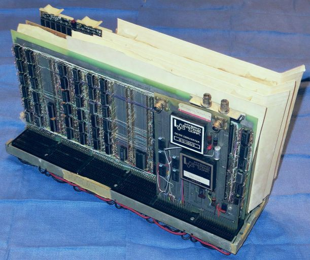
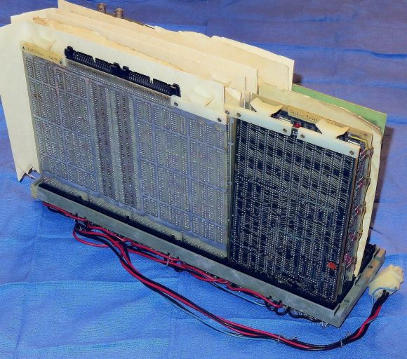
The following has photos of all the boards, backplane, and killer fan:
This shows the VPP complete with the original manila file folder separators in their original locations as it's unlikely the VPP had ever been disassembled prior to taking these photos, and the individual hand wire-wrapped boards and backplane along with the original layout drawing and "Killer Fan" which attacked Ed on at least one occasion with serious damage to Ed (not to the fan). The large boards in order in the PDF are: DREW (Drew Wolff), Processors II, I, and III (Larry Ashery), Voxel Data, and the Host Interface (Ed Walsh). I don't know why the Processor boards are out of order or if it matters. The other boards are the LSI-11 DRAM and VPP SRAM, and the video DAC. I provided the DAC board, all that remains of my Masters Thesis frame buffer. The small PCB in the backplane is a DEC bus terminator. The 3 Processor boards generated the coordinates and the Voxel Data board did the slicing and shading, perhaps. Ed probably knows what that and the DREW board actually did.
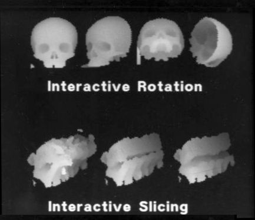
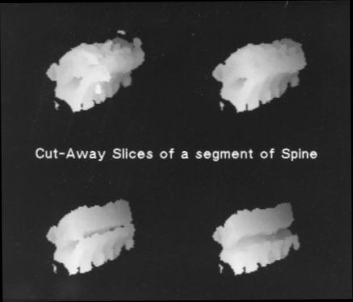
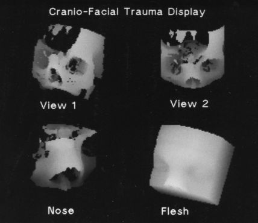
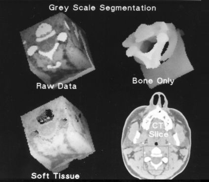
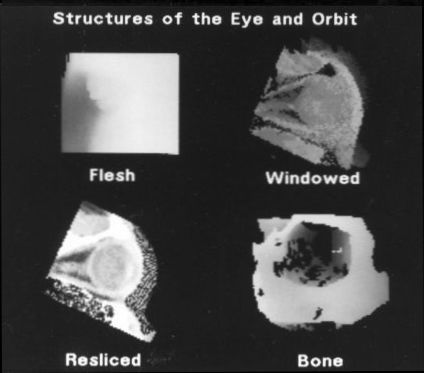
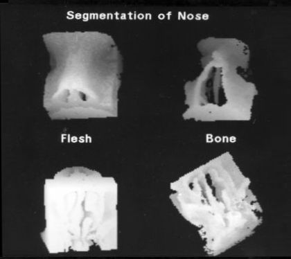
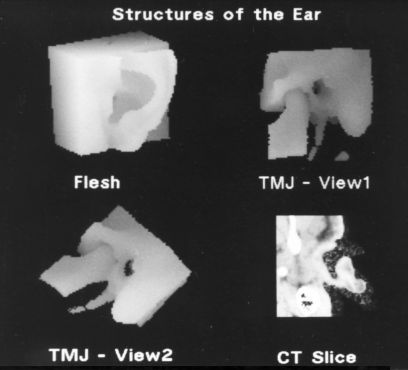
Since the VPP hardware only generated rendered images from the 64-cube with no annotation, and one image at a time on the video monitor, photos of the monitor must have been scanned into the Jurassic equivalent of Photoshop and combined along with text to create these, or more likely pasted with strips of text onto a black matt and rephotographed. But each one of the little images was rendered in true real-time. ;-)
The following is a link to a YouTube video that shows the VPP in action at GRASP Lab. This is where the real-time action was. ;-)
It's unlikely that anyone on the face of the Planet would know how to make the thing work now. OK, that may not be totally accurate. I bet Ed could if a PDP-11 or LSI-11 (with parallel interface), trackball, and RS170 TV monitor (along with a suitable incentive) could be found on eBay. :) There were numerous demos and newspaper and magazine articles. A number of research papers were written based on the VPP and proposed future technology. At some point, a separate space was made available to be called the "GRIP Lab" (possibly: GRASP Image Processing Lab) was set up with the primary attraction being the VPP. I have no idea whatever became of that facility, though it was mentioned in a UPenn publication after we left. If the CT console had fit in a Nissan hatchback, I might have taken it home for old times' sake. :) (Then locating a track-ball and TV monitor would be no problem!)
I would probably have been content to continue along the academic path writing papers with incremental and trivial enhancements to the voxel processor architecture. But that was not to be. Another student, David Talton, was aware of the development and decided to write a hypothetical business plan to develop and market a real-time 3-D medical workstation for an entrepreneurial course project. Then Dave, Anthony, and Ed decided to do it for real. :) Originally, I was only supposed to be a consultant, but this seemed like too much fun to pass up. And besides I had been neglecting my academic publish-or-perish requirements (and there was also some political intrigue involved in the tenure decision), so I left UPenn before being officially kicked out. And the rest, as they say, is history. :-)
(Apparently, there is more than one company now (in 2019) called Dynamic Digital Displays, with absolutely positively assuredly no relationship to our 3-D!)
DDD started out in a 10x10 foot room in the University City Science Center, an incubator space in Philadelphia, PA close to the University of Pennsylvania and Drexel University. For awhile I retained my academic position so only 3 guys had to fit into that tiny space, smaller than a garage! With some seed funding from the Benjamin Franklin Technology Partners, DDD then quickly expanded to several rooms there and then I joined full-time.
The first machine based on the voxel processor architecture to be built after the VPP was dubbed Voxelscope I (VS1), using wire-wrapped boards (similar to those in the VPP). The wire-wrapping was done by a lady in New Jersey to whom Ed would deliver the prototyping boards with sockets and pins installed, along with a netlist, wire, and a wire-wrap tool. The Netlist was generated by Ed-CAD, developed using YACC. The transfers took place under the on-ramp to the Ben Franklin bridge, like something sinister. :) The boards were then buzzed out for accuracy by Ed's grandparents on their kitchen table. VS1 used a similar back-to-front algorithm as the VPP but it was now based on a slice-by-slice access sequence which is a lot easier to get one's brain around than octrees. The Host was a DEC MicroVax II.
The following VS1 screen-shots were found in a binder along with the VPP photos and hundreds of 35 mm slides of all sorts of stuff:
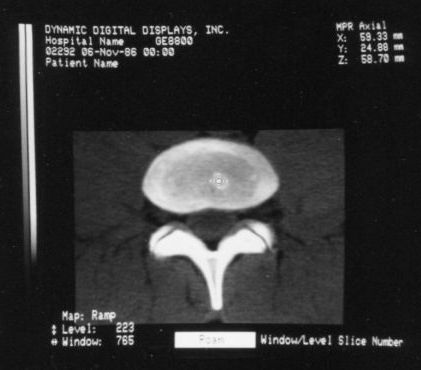
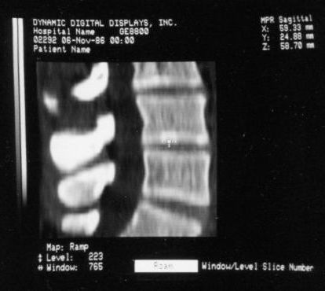
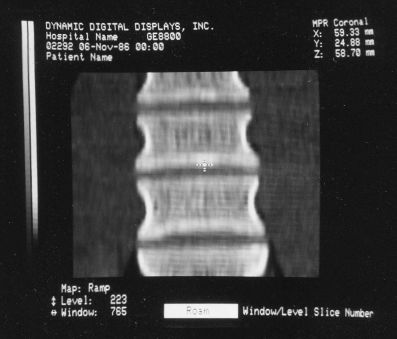
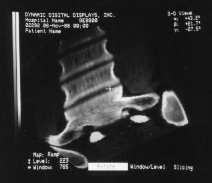
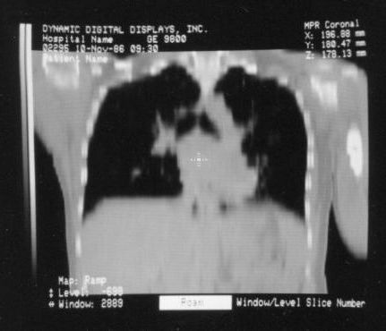
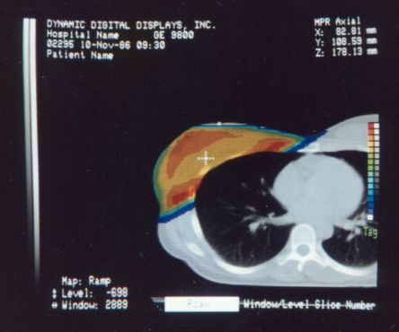
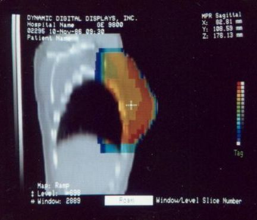
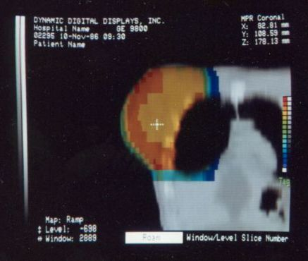
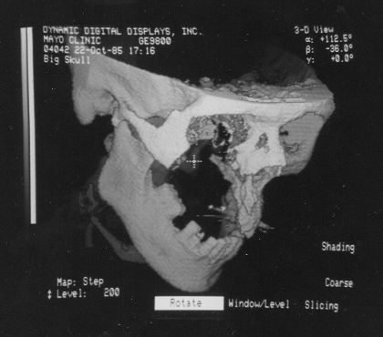
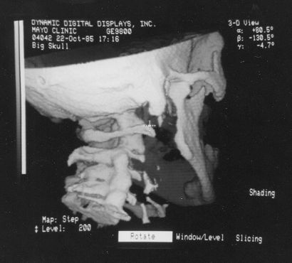
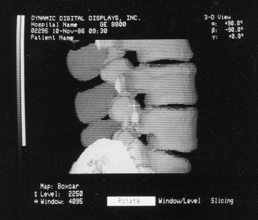
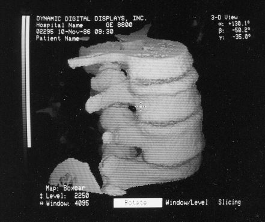
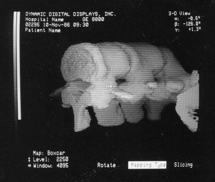
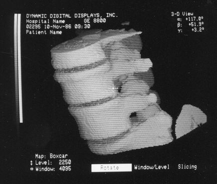
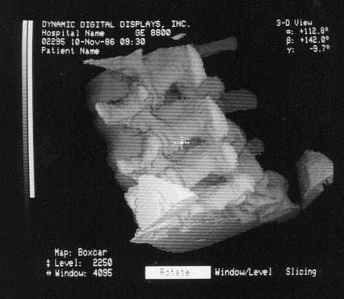
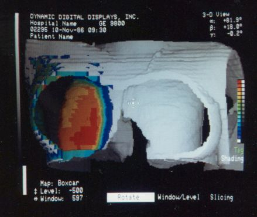
The annotation was generated by the software so no more cutting and pasting. :)
The following is a link to a YouTube video of VS1. It's not known what the intended audience was and it has no audio, and it is long and boring.
VS1 was introduced to the World (or at least the diagnostic community) at the Radiological Society of North America (RSNA) technical/trade show/meeting, the week after Thanksgiving 1988. RSNA was HUGE - occupying over 2 complete floors of the gargantuan McCormick Place in downtown Chicago, IL. DDD had a 10x20 foot professionally-designed and constructed prefab booth on the second floor, where the pion companies were located. We drove out to Chicago in a rented van with our precious cargo of the Voxelscope I in its DEC BA11 box, MicrovAX II clone (genuine DEC boards in a cheezy enclosure), and two huge heavy video monitors. We stayed overnight in a motel with the van parked conspicuously under a bright light, lest someone take a fancy to the van (and toss the valuable stuff on the side of the road). Now Chicago is a union town, so there were strict limitations on what non-union people were allowed to do in putting the booth together including things like plugging a power strip into an electrical outlet or hammering a nail. :( So until we got used to this and accepted it, the union shop enforcer-types would be showing up regularly. They were usually fairly polite.
The pair of video monitors was the focus of the booth, displaying sequences of skulls and such from real CT datasets like those in the above photos being rotated, sliced, and diced at reasonably rapid update rates. The instructions for performing the operations were captured and recorded but the actual voxel processing was done in real-time based on the stored program. Thus, no one needed to be constantly spinning the trackball, though that could have been arranged upon request. :) The monitors were up high so visitors couldn't get close enough to see how poor the resolution was. :( :) It is believed that VS1 had a microcode-based pipeline running at 10 MHz so that a 128-cube (2,097,152 voxels) could be manipulated at around 5 images per second. The display was 256x256 pixels on a 60 Hz non-interlaced display - double that of VPP. But object space could be configured to be any arbitrary rectangular prism as long as all the data fit into the voxel processor's memory. The photos, above, are typical of the displays at RSNA.
In terms of user software, this was not even a quarter step up from the VPP, and was really just a teaser to introduce DDD to the medical imaging community. It would not have been possible to order a VS1 even if someone was crazy enough to want one. After the booth was dismantled at the end of the show, some of us flew back to Phila. One 13 hour drive with an overnight stay at a cheap motel was enough, thank you. :) But those who flew did help to carry the equipment inside when they arrived at the Science Center loading dock.
Once venture funding was secured in 1990 (eventually reaching something like $8,000,000), we moved into half the ground floor (around 10,000 square feet) in the "130 building" of the Wyeth office park in St. Davids, PA, a suburb of Philadelphia, growing to around 35 employees before being acquired by Picker International. With real funding (at least for those days), one also gets supposedly real Management paid real money - CEO, CFO, Sales, Marketing. Marketing wasn't too bad and the CEO did some of that as well. Sales (the people hired by Management that is) was a joke, one step above slicky used car salesperson-types or politicians: "We will give 125 percent effort.". I'm not sure the Sales force ever sold anything. But the CEO's high-priced suits and greasy hair may have helped in the end. Until we had a "real" CFO, Talton served in that capacity and still did the accounting, balancing the books to the penny. :)
The VCs wanted to take out $1,000,000 insurance policies on the Founders but we refused. Ed's invoked his First Law: "Never be worth more dead than alive.". :) So the policies were much more modest and would offer no temptation to hire a Guido-type if finances went south.
The VCs even brought in one of those motivational experts to the tune of something like $8,000 for a couple hours work to help motivate the DDD employees (like that wasn't what we were all about already). But even the VCs could see that he was nothing more than an overpriced snake oil salesman and sent him packing after only half the allotted time.
The first workstation to be seriously marketed was Voxelscope II (VS2) which had greatly enhanced volume memory and higher display resolution. Unfortunately, that came at a cost and it, and all its successors never even came close to achieving the true video-rate real-time performance of the VPP, which would have required the massively parallel technology in the Patent. But even very early on, VS2 had somewhat real software with a Graphical User Interface (GUI) and enough functions to be credible, at least for demos including instantaneous Multi-Planar Reformatting (MPR) which could display a slice though the object at any depth aligned with one of the principal axes (axial, saggital, or coronal) or at an arbitrary angle, as well as real-time (fraction of a second, but not video rate) 3-D shaded surface with density selection and slicing. A Motorola 68000-based VME bus single board computer replaced the PDP-11 or VAX (sorry DEC) and implemented the high level control and Graphical User Interface (GUI), ran the file system, and interfaced to the outside world.
At some point, a coarse-to-fine rendering strategy was implemented whereby the initial view was computed at 1/2 or 1/4 resolution in object space and zoomed up in image space, so the time to render an image would be cut to just over 1/8th or 1/64 of that for the full resolution dataset, respectively. Then if if no new view was called for, the full resolution version would replace it. This greatly enhanced the feal since there was a totally real-time response to mouse movement or commands. It may have even been a multi-step process - 1/4 then 1/2 then full resolution.
These photos of the Voxelscope II screen are typical of the types of rendering provided by the system.
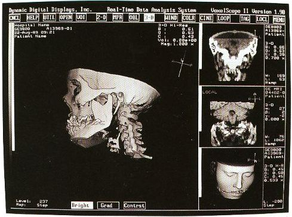
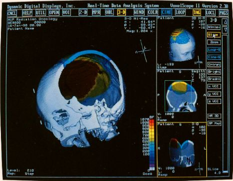
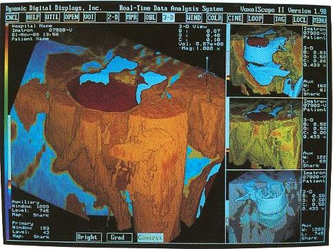
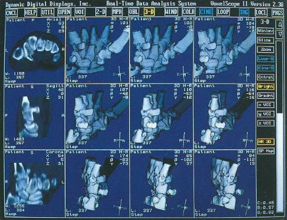
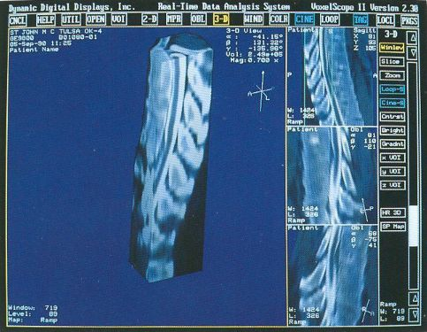
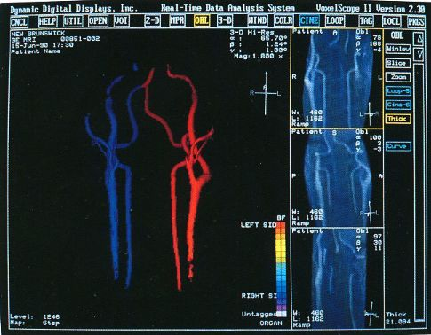
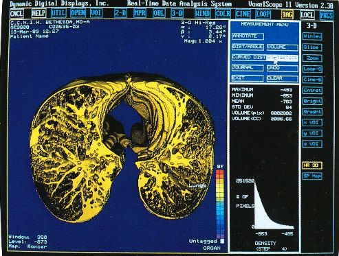
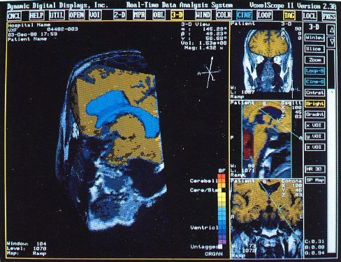
And here are some marketing info. Most of the above photos come from these, so if all you're after is nice pictures, no need to go there. ;-)
The following is a link to a YouTube video of VS2.
The voxel processor hardware of the Voxelscope II consisted of five hex-width DEC form-factor custom PCBs and MicroVAX memory (DRAM) modules. For some reason we stuck with the DEC form factor and edge connectors despite it being far from optimal.
There were a few days of panic when Marketing discovered that at certain orientations, artifacts affectionately called "holes" appeared as a black grid in the rendered images. These were present in the prior implementations as well but were ignored. We figured, just change the orientation and they'll go away. :) Now, however, Marketing was afraid that customers would complain and they would have to concoct some techno-babble-based explanation. Essentially, holes appeared when display pixels didn't line up with any voxels orientated orthogonal to the screen, so they were never filled in. The scale factor could be reduced for all views as a remedy, but then image quality would suffer. After some head scratching, it was hypothesized and then confirmed that as long as one of the slice axes lined up with X or Y on the screen, there would be no holes at a 1:1 (or smaller) scale factor. So the rendering algorithm was split into two parts: An initial back-to-front traversal as before (at 1:1) with the Sparc determining a suitable orientation that aligned with X or Y, and a 2-D bilinear rotation implemented in microcode as a post processing step. This could also be used to implement zoom with decent image quality as long as the magnification wasn't too high. Overall, the result was quite satisfactory and the rendering time was only increased by a very small fraction of a second. Since these machines were no longer generating images at the full video rate, that was insignificant.
No summary of our history would be complete without the "yogurt shaker" musings. Whenever the technical challenges became annoying (as with the "hole" issue), Ed and I would speculate on what a better business model would be. The running joke was to market yogurt shakers. Like other frivolous devices, this could be a fad that would sell millions of units while it lasted. Such thoughts were reinforced daily because Matt #1 usually came in with a yogurt in hand and the shaking produced the most obnoxious gluppety-glup sound. He no doubt relished in the reactions it produced from us. Everyone who eats yogurt knows that it is essential to uniformly redistribute the lumps that usually congregate on the bottom. What better way to do that than a high tech yogurt shaker - a mini version of the in-can paint mixers found in hardware stores and home centers. And they make the same sort of gluppety-glup sound. :) Of course it would be suitably stylish and fully digitally programmable by brand, type, and flavor of yogurt to deliver the optimal experience. (I'm not sure if we realized at the time that it could be Internet connected for both remote operation and firmware upgrades, this was way before the Internet of Things.) Now of course, we had absolutely no interest in designing such a gadget, much less starting a new business or changing this one, even if there were a huge market. But it was something for idle discussion. And there were also printer buffers as an alternative if yogurt shakers ran into technical or legal issues. ;-)
Of course, once there was a real Marketing department, the real Software types (led by Eddie Wyatt) were always slowing things down anyhow in the interest of generality - or to concentrate on features users might actually care about! What a conecpt? ;-) One example was Multi-Planar Reformatting or MPR where a single cut along one of the principal planes - axial (XY), saggital (YZ), coronal (XZ) - or at an arbitrary angle or even curved cut through the object is displayed. MPR could have run at full video rates on any of the machines, but no matter how hard I tried to convince Software to improve the performance, it never chugged along at more than a couple frames per second. :( :) And large portion of the VS2 hardware capabilities were never exploited due to feature priority as determined by Marketing.
Anthony had been unhappy since we transitioned to a company rather than an academic endeavor, threatening to quit almost daily over one thing or another. So after around the twentieth time, we (the other 3 Founders) finally had enough and said "OK" instead of "we're sorry". He was particularly upset when someone would go straight to Eddie with a software request and not respect his management position, though that probably wasn't the entire reason. There was probably a cultural difference that neither he nor we fully understood.
Then there were the "Window Wars". :) Early on When the VS2 Graphical User Interface (GUI) was being developed and Ed was doing a lot of the software, I would be working on microcode in one corner of the larger rooms we had in the Science Center, while Ed was in another corner. I'm a stickler for window size and position to be exact to the pixel, as well as remaining centered around the cursor when zooming. I would make a change or Ed would make a change and call out to each-other to retest. "The position is off by one pixel!." or "It's got a line of pixels from the previous window." or "Now it's too small by one pixel" or "The entire window jumped left zooming in." :) And so it went.... These were bugs! But in the end the result was perfect (at least in so far as those boundary conditions were concerned). This is unlike some currently supported applications "real" companies where boundary condition bugs that would not have been tolerated at DDD are still present. That episode was probably the closest the Founders came to blows at DDD. I'm exaggerating just a wee bit as it was always civilized. What's an error of a pixel or two among friends? ;-)
Voxelscope II was the first machine that we attempted to sell in a serious way with the marketing hype proclaiming that it was only the size of a dishwasher. ;-) (It was known internally as the "Tank".) And by that time, VS2 had a sizeable set of capabilities in addition to MPR and 3D with a fairly polished GUI which included what would be needed for it to be clinically useful. Or so we hoped.
That dishwasher-size enclosure held the custom VS2 board set, Motorola 68000-based host, one or two 300 MB (WOW!) 5-1/4 inch harddrives, DC power supplies, full-size rack-mount 9 track 1/2 inch reel-reel autoloading tape drive, and 9600 baud modem for remote technical support. A high resolution CRT color monitor, keyboard, and mouse completed the system. (Sorry trackball, A mouse is easier to use for nearly everything except 3-D rotation, which even with VS2 was only a small subset of the workstation's GUI. A tablet might might have been even better but they were more-or-less out of fashion.
Ed, Matt Donham (official employee #5 after the Founders #1-4), and I did most of the digital design. Ed did HI2, Matt did FB2 (and all subsequent FBs), and I did DT2 and possibly CT2 and VB2. While computer networking was initially developed in the late 1960s with ARPANET, what might be considered the Internet we know today started with TCP/IP specifications being solidified in 1983. However, even in 1989 when VS2 was designed, the World Wide Web (WWW) did not exist. No Web sites, no browsers, and no search engines. So, identifying suitable parts was not a matter of typing in a set of key words to locate numerous options by part number or function in seconds. DDD had literally a 12 foot long WALL floor-to-ceiling in the main conference room filled with databooks for electronic components from companies like Advanced Micro Devices, Fairchild, Motorola, RCA, Signetics (including their proprietary write-only memory with unlimited capacity, very useful for bit buckets), Texas Instruments, and many others. Just acquiring the databooks meant phone calls and/or snail-mail usually to electronics distributors but sometimes direct to manufacturers - and endless waiting. Then to be able to obtain samples or order parts usually required developing a relationship with the distributors. Then actual ordering and more delays. And for the small quantities DDD required for prototyping (or even manufacturing), getting their attention was often a challenge.
Each of the digital designers did their own schematic capture using OrCad ESP for DOS on i286 PCs with color VGA CRT monitors, typically running DOS 6.2. Early on, most of the PCs were put together by some hole-in-the-wall computer outfit in a local strip mall - inexpensive, ugly, but reliable. Later on we went with name-brands like Northgate or Gateway 2000. I did all the PCB layout for VS2 using the DOS version of Tango PCB as a brainless exercise while thinking about other things. The GUIs for the DOS versions of both OrCad and Tango are still far superior in my opinion compared to those of the modern Windows versions of the same applications (which still exist to this day), and without their software bloat of creeping featurism. They did everything we needed. PLD programming used CUPL for DOS and an InLab 28 programmer, which except for the one tantalum capacitor that exploded without warning :), was very reliable. Even the tantalum bomb causes no damage. In fact, I've used it for personal projects relatively recently. Initial PCB layout for the large boards was done with a separate autorouter called "Super Route", also under DOS. But while it was able to generate accurate connections based on the netlist and parts placement, the routing quality wasn't very good. So there was a lot of hand cleanup that needed to be done afterwards as the output of the autorouter would invariably have a serious case of "take the scenic route" and the "jigglies" for many traces. I'd get together with the original designer before to hand-route critical signals and after routing to assure that the paths for automatically generated routes weren't totally ridiculous (or too ugly!), then doing whatever cleanup was needed. The wiggly traces probably weren't of great consequence (except esthetically), but a clock signal that went around the perimeter of the board to a destination an inch away would be, thus the hand routing for those signals.
The autorouter was very compute-intensive and drove the need to upgrade to faster and faster PCs. A single run could take 12 hours on an i286 PC. There was an unwritten rule at St. Davids that no one have a faster PC than mine and its twin at home, supposedly justified by the requirements of the autorouter. The last one was a Gateway 2000, 100 MHz Pentium desktop probably also running DOS 6.2, but with Windows 3.1, purchased around the time of the infamous Pentium floating point bug. Mine were clean. They were later upgraded to at least Windows 95. :)
Oh, and the digital designers knew that using a monostable anywhere on their board(s) without 15 justifications was criteria for instant dismissal. ;-) I'm fairly certain that there were NO monostables in any of these systems. (Though rumor has it a delay line snuck onto one of the boards, which is almost as forbidden.)
VS2s were assembled by our Manufacturing department led by Stan Dzomba, who had three Laws of Life: Don't buy a house, don't get married, don't have kids. He violated all of them but seemed happy enough. I would add: "Don't buy a boat" based on my experience with a friend of mine and his 23 foot sloop. :) There was one other employee in Manufacturing, Mike Riley to do the actual assembly work. Manufacturing of VS2s consisted mostly of mounting the card cage, power supplies, host, and disk drive(s), and building the wiring harnesses. Dave O’Neill (a kind of general purpose technician and diagnostic software developer type) wrote code to help with the actual testing. PCBs were fabbed, stuffed, and tested by a sub-contractor using Dave O.'s programs. There was no real quality control at the time, so I would go into Manufacturing and check periodically. One day I found that it was possible to pull wires from terminal lugs in the power distribution box by just gently wiggling them. They practically fell apart. Needless to say, this was asking for trouble, particularly being in the AC power wiring. The wrong crimp tool die was probably being used for the wire size. I was not happy and made it known, almost certainly too forcefully with inadequate tact. :( :) But all subsequent crimps were well done!
Dave O. (and others) knew of my interest in electronics repair and would bring in small broken items from time-to-time for "evaluation". I recall one morning seeing a HUGE HEAVY RCA console TV being wheel into Manufacturing on a furniture dolly. "It's dead.". Dave and I did repair it, bad flyback transformer. Manufacturing had tossed out a nice DMM, which I later repaired as documented in Repair Brief #46: Beckman Model 310B Digital Multimeter with Random Display. It has continued to function until very recently, but now there are problems with the calibration, which might be a related failure. I didn't generally get involved in actually repairing Voxelscope hardware, but had been caught diagnosing a failure at times based on artifacts in the displayed image. Microcode bugs were another matter.
Testing VS2s was ad-hoc in those days, though Marketing was generally quite adept at finding bugs, sometimes crashing the system by sitting on the keyboard. Why didn't Engineering think of that approach? :-)
A total of around 20 VS2-based workstations were ever built and most were used (I'm being generous) in various teaching hospitals so we could say there was an installed base. I wonder if any survive, even if in the corner of a sub-basement storage room. :( :) I used to have piles of VS2 boards removed when systems were upgraded but they have long since been scrapped. I thought I had saved a complete set but now cannot locate it. So there may not be a surviving VS2 board-set anywhere on the Planet.
There was one non-3D-related incident at St. Davids: We came in one morning to find the place had been burglarized. The thieves made off with a couple of Sparc workstations (including mine), Len's PC, and a Sony Diskman. I don't think much more was taken. Fortunately everything was backed up and they didn't take my bike, which had a wimpy lock on it. :) Their plans may have been aborted when in their haste to disconnect stuff, a cable fell across the clock radio on my desk turning it on. With unexpected voices or music, the others may have panicked, so everyone left. The radio was playing when we arrived. I don't know if the perpetrators were ever caught though rumor had it that is was an inside (Wyath) job.
Here are typical examples of VoxelQ displays. These are mostly only windows,
not the full screen which is more along the lines of the last block of
AcQSim photos.
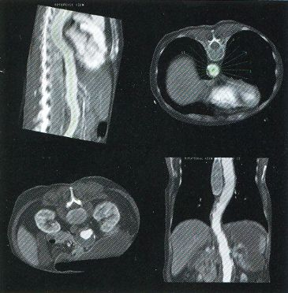
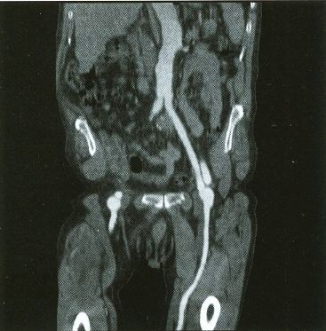
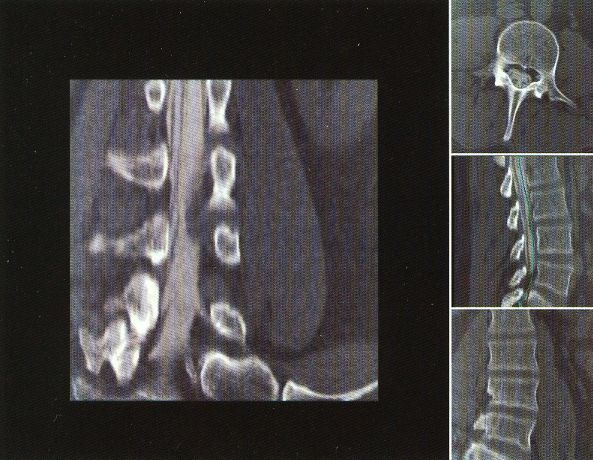
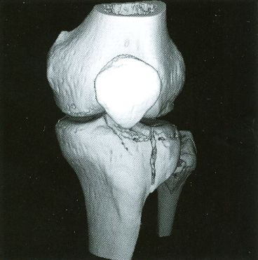
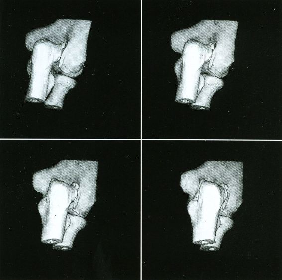
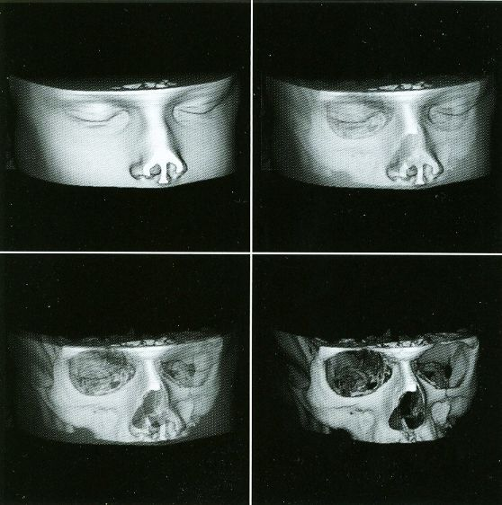
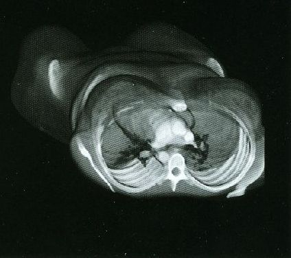
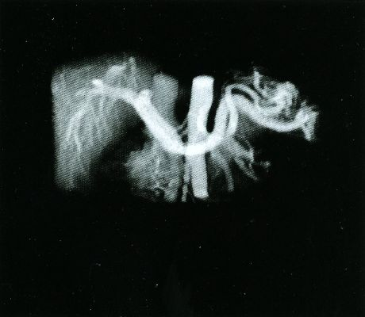
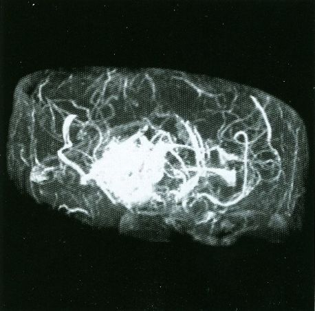
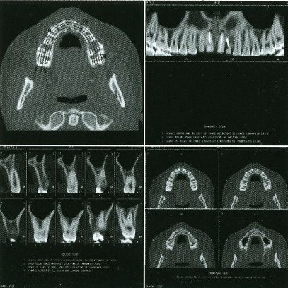
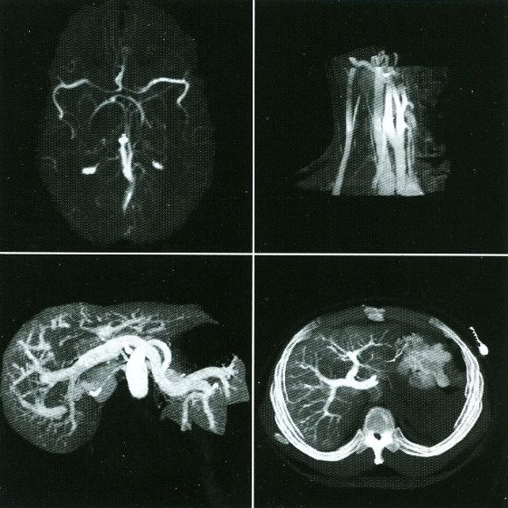
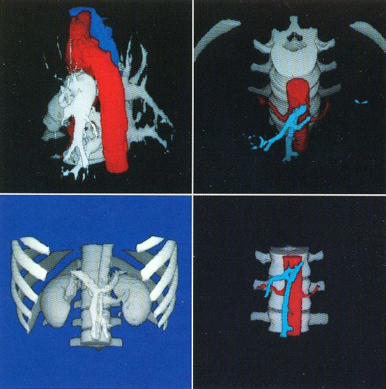
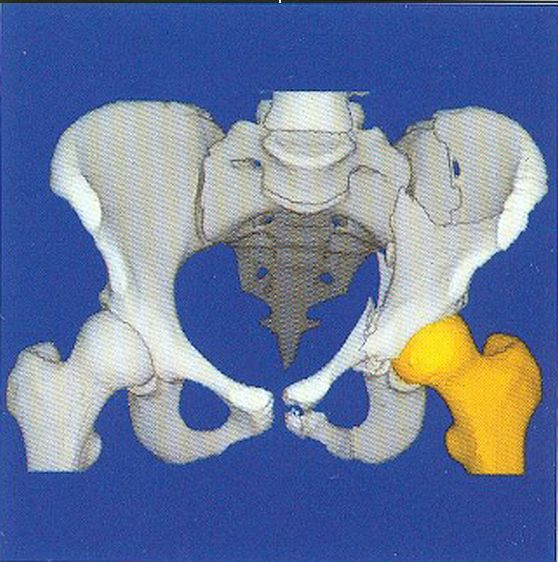
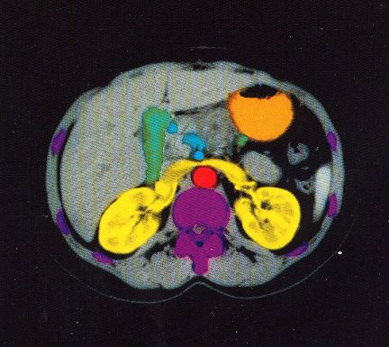
Here is some Marketing blurb. Most of the above photos come from these.
The following is a link to a YouTube video of VQ. This is what you get with real Marketing types at work with a real Marketing budget:
At some point around 1992, DDD was officially acquired by Picker with the VCs (Vulture Capitalists) to get royalties based on units sold over three years. Calling them that name may be inappropriate as they seemed fair enough and were respectful of the Engineering personnel. Dealing with DDD Management when cash flow wasn't favorable may have been another matter, though I'm sure the "Deal Closer Cookies" provided by our VC-hired CEO helped. :) But had DDD not been acquired by Picker, we would have had to close within days as the funding burn rate was unsustainable. However, the VCs would have come out better if they had structured the deal to back-end load the royalties as most systems were placed in year three, but at least they didn't lose their shirts in the end.
Picker Management had all DDD employees attend a training course called something like "TQM" for "Total Quality Management". (There's that "Q" again.) Anyone who has worked for a large company probably has endured something similar. We were all bused out to Cleveland to listen to some droid go on and on about how everyone has to work together with pathetic interactive anecdotes to prove it. Watching paint dry would have been more productive.
While the VPP and Voxelscopes I and II rendered "back-to-front" to implement hidden surface removal, the redesigned VoxelQ hardware was optimized for ray tracing with volume rendering capabilities. VQ projected a ray from each pixel on the display back through the object and was able to perform computations along the way. An innovative sub-voxel search algorithm rendered much more realistic surfaces using relatively simple surface shading algorithms. Even Anthony was impressed with the image quality when this technique was first simulated in software with the intent of incorporating it into the microcode - and he was most familiar what else was being done in software, which could render the best images since there were fewer time constraints. In addition to hidden surface removal and gradient shading, this approach supports various forms of transparency with perspective enabling the simulation of X-ray views ("reprojection") as well as rendering translucent organs. Many of the changes were implemented in microcode with relatively small changes to the actual hardware. But the key innovation that differentiated VoxelQ from the machines before it was the "Object Resampling Memory" (ORM) which generated tri-linearly interpolated voxel data based on full 3-D coordinates. Essentially, the eight adjacent voxels closest to the specified coordinate in the original dataset were accessed simultaneously and an interpolated result was computed auto-magically. For successive coordinates that were close together (as they would be for ray tracing), the effective throughput could approach 10 million tri-linearly interpolated voxels per second. The ORM was the only totally new custom board and replaced the MicroVAX memory.
Shading of the rendered objects is essential to the perception of 3-D depth in a static display of a single image (no stereo). Motion parallax also contributes to this but only if the update rate is high enough. The VPP only had "depth shading", whereby each pixel's value was modified by distance from the viewer. Subsequent machines used "gradient shading" which also calculated the local rate-of-change of the surface to modulate the pixel intensity. While this was not photo-realistic, the overall effect was quite satisfactory at a much lower computational cost. And with the tri-linearly interpolated voxels, the result was actually quite impressive.
The VQ hardware consisted of six large custom PCBs in a DEC Hex-width backplane. The Object Resampling Memory (OM3) has no equivalent in VS2 (which used MicroVAX memory) and is the key to the performance of the entire system. Throughout development the names Voxelscope II+ and Voxelscope III may be used interchangeably before (and even after) they all became VoxelQ..
The overall organization (including software!) is shown in the following:
The six boards of the voxel processor hardware of the VoxelQ consisted of:
After the initial version of VQ was completed and its successor (AcQVision) was cancelled (see below), there was one upgrade to add the volume rendering including transparency hardware to the Data Transform PCB, thus the name DT4 instead of DT3. :)
The silkscreen images are included just to get a feel for the size of these through-hole PCBs - approximately 15.7x8.4 inches. These are still DEC form-factor with gold fingers.
By comparing the functions of these boards with those of the VS2, it can be seen that there are many similarities. The HIs were virtually identical. However, I cannot vouch for the total accuracy of the diagrams. Not only has it been almost 30 years since the VQ was designed, but my archives are not exactly well organized and our idea of a document control process was to change the file name. :) And having been copied and backed up multiple times, the creation/modified dates are long gone so there's no telling which was the final version. Therefore, if you find logical errors after building your own VQ, sorry. Implement it all inside a giant FPGA so they can be easily corrected. ;-)
The OM3 PCB with on-board SIMM DRAM modules constituted the ORM. The logic was designed by Len Miller included FPGAs programmed by Matt Donham to effectively reconfigure the normally linear rows inside DRAM chips (which are loaded in their entirety on any access of a bit in the row) into cubes or rectangular prisms in object space. In that way, successive reads along a ray in an arbitrary direction would see no access latency as long as the required voxels were within that 3-D region of the DRAM row, thus achieving a throughput close to the full pipeline clock speed since under those conditions, the access time was well below the pipeline clock period. That scheme came to me during a walk. It's not really such a profound thought, just a matter of grouping the address bits differently, so that didn't require a dream. :) The reconfiguration allowed VQ to continue to use low cost DRAM boards rather than ultra pricey high speed SRAM chips on custom PCBs for the object memory. However, to take advantage of the reconfiguration, as well as to squirting out the tri-linearly interpolated voxels at the pipeline clock rate, the design of the object memory controller was the sort of assignment one gives to a new engineer hire without telling them their continued employment depended on succeeding at a task that couldn't be done. :) It was a minor miracle that ORM actually worked considering everything the FPGAs had to keep track of including the address offsets to access the 8 adjacent voxels to perform tri-linear interpolation, boundary conditions to know when to freeze the pipeline when any one of the 8 required voxels came from a different DRAM row and a full access had to be initiated, or a DRAM refresh cycle was required. There were one or two very obscure boundary condition bugs early on but a few tweaks to the FPGA programming provided the cure. It all came together in the end and the object memory subsystem was very reliable.
Most processing was done in a pipeline running at the same whopping 10 MHz as the Voxelscopes, which was the highest clock rate we figured could be maintained reliably across multiple large boards. There was some discussion on going to 20 MHz for the overall system but that would have required significant redesign of all the boards with a high risk factor. (However, the ORM did run internally at 20 MHz.) With some 40 separate computations were controlled by 192 bit wide microcode, the equivalent processing speed was over 2 GigaOps/second since many of the computation units actually performed multiple operations in a single clock cycle. These included the coordinate calculations using Wafer Scale 59032s - 32 bit versions of the ubiquitous AMD2901 bit-slice ALU and an FIR filter chip with 4 multiplies and 3 adds in one clock cycle. And since each of those Ops was optimized for 3-D rendering, its effective performance was probably at least an order of magnitude greater than it would be using an i86-type PC with a 2 GHz CPU clock.
A Sun Sparc II single board computer managed the file system, interfaced to the voxel processor hardware, and ran the GUI. Sparc workstations were also used for the software development. But while firmware was developed on the Sparcs also, the tools used were along the lines of stone knives and bear skins. :) There was a microcode assembler cobbled together by Ed, a system state dump utility, and not much else beyond what appeared on the VoxelQ display (but that in itself is a very powerful debugging tool). Even with the assembler, microcode instructions looked more like transmission line noise than something humans could understand. Control of the hardware was written in C++ or variants on the Sun. The VoxelQ GUI was custom developed since in the early 1990s, standards were non-existent and in any case, using high level system calls would not be able to meet the VoxelQ performance requirements.
The decision to convert to a ray tracing architecture was made on Good Friday of 1991, with the goal of having a system that could be demonstrated (if not polished) by the end of November for RSNA. While the hardware was functional well ahead of time, I for one (as a hardware/microcode-type) seriously underestimated the software effort that was required even to have a rudimentary system up and running for demos. So, while a push was made to get some type of software going as late as a few days before RSNA, in reality we probably missed that deadline by at least 6 months. The hardware crew (primarily me, Ed, Len, Matt) wanted to take the working hardware with test software just to be able to show something, even if in a back room for selected guests, but in the end were convinced to hold off. However, the VQ was really cool when introduced at RSNA 1992.
As noted, the hardware consisted of 6 custom PCBs. Ed designed the Host Interface (HI3) and Coordinate Transforms (CT3), Len did the Object Memory (OM3), I (Sam) did the Data Translation (DT3) and Voxel Buffer (VB3), and Matt did the Frame Buffer (FB) and FPGAs for OM3. As with VS2, portions of DT3 were the only subsystems that the Patent actually covered. It has lookup tables and other hardware for selection, mapping, slicing, and dicing. All real-time calculations were in integer or fixed point. Floating point was only done on the host. I wrote nearly all of the microcode for VS2 and VQ, while several other hires including Eddie Wyatt (another low number employee) wrote much of the applications software. I also did all the PCB layout for VoxelQ also using the DOS version of Tango PCB along with the Tango Autorouter.
I did the mechanical design for the interior sheet-metalwork of the tower enclosure - again using Tango PCB - which proved quite acceptable. These were mostly parts like mounting brackets and adapters. I don't recall any errors in dimensions or hole placement that couldn't be remedied with a BIG hammer. ;-) No need for AutoCAD. That tower enclosure is the same one used by Picker for other equipment. It's larger than a PC tower and comes essentially empty except for mounting rails.
In addition to the 6 major voxel processor PCBs installed in an 8 slot hex-wide DEC-style card cage (with card guides!), there was a signal breakout PCB called VPIO with the keyboard and mouse connectors, among others, and a power distribution PCB called PWR providing 5 VDC and 12 VDC to the backplane, Sparc, harddrives (up to 20 GB total), and other peripherals including an 8 mm tape drive and/or R/W optical drive mounted using the tower rails. And there was the essential 9,600 baud modem stuck on the bottom to complete the system, with its own power adapter.
For better or worse, our Manufacturing department and its employees were casualties of the Picker acquisition. While VQs were still completely designed by us in St. Davids, the PCB boards were fabbed and stuffed by Picker sub-contractors, and VoxelQs were assembled and tested in Cleveland.
All told, some 2,000 VoxelQ workstations (list price from $125,000 to $150,000 each) were delivered to customers. A basic system consisted of the VQ tower, high resolution CRT color monitor, keyboard, optical mouse, and computer desk. :) How many VoxelQs were actually sold outright isn't clear - probably not many. Some were included as deal closers for high-end CT scanners. "If you sign now, we'll include a high performance 3-D workstation AND Choppomatic veggie slicer totally free of charge". ;-) Others were part of the AcQPlan systems. How many non-AcQPlan systems were ever really used is also questionable. Partly this was due to the medical reimbursement structure. A device would be justified only if it could pay for itself via billable procedures. Even in the 1990s, the actually utility of 3-D visualization for medical diagnosis had yet to be proven and the entire field was still in its infancy, so there were few suitable insurance billing codes.
We (the 4 founders) never did exactly get filthy (or even modestly) rich from the sale of DDD or subsequent time with Picker but didn't starve either. Anthony had actually left prior to the Picker acquisition so he didn't participate. We entered into employee agreements which included several bonuses based on totally unrealistic goals ("the Milestones") which were totally beyond our control. Our base salaries were somewhat reasonable for our positions. Or at least they weren't totally ridiculous. We collected the bonuses without achieving the milestones anyhow since we held all the technology cards and it was essential to keep us reasonably happy for awhile at least. :) But I eventually became bored with Picker. As a big company, they weren't that interested in cutting edge visualization technology, having fulfilled the original requirements for AcQPlan. So support for development of a next generation system was hesitant at best. We did pursue a modular implementation for awhile based on the Texas Instruments MVP (Multi-media Video Processor, the TMS320C80), essentially an early 4 core GPU chip). And it even was given a name: AcQVision (with the required Picker "Q"). :) Two 11x13 inch 12 layer PCBs were designed and prototyped: One had a single MVP with its local SRAM and DRAM, along with a VRAM-based high resolution frame buffer. The other had 2 MVPs with local memory. Originally, we wanted to put 4 MVPs on a single board but that just didn't fit. Here are photos of the boards for whatever they are worth, which isn't much now:
There was one minor disaster with respect to the MVP/FB PCB layout: It was found only after populating the board when debugging had commenced that 4 bits were reversed in the data path, so an adapter PCB had designed to be installed between the Bt463 and its socket. That must have been a treat to solder. :( :)
MVP chips cost $1,295 each in quantity 25 when we bought thinking AcQVision was viable. Now I can't sell them for $15 on eBay. :) I still have many of the MVP chips available (new/NOS, PG2 production version, 3.3V, PGA package). The die is about 3/4 inch square and still makes an impressive show-and-tell if the cover is removed, instructions will be provided. Make offer above $0!) The backplane "MX Bus" supported transfers at several hundred MBytes/second. The MVP/FB board was operational and could perform some visually impressive, if useless, operations. I wrote my one and only MVP program to blit an image to random locations on the screen as fast as possible. Even more so after someone suggested we double the clock speed by swapping crystals. :) But the Dual MVP board with 8 cores could only achieve a theoretical performance of a fraction of the VoxelQ, and no doubt it would be much less in practice. (I don't know if that was ever tested.) So, many large expensive boards would be needed to significantly improve on the existing VoxelQ. And while coding the MVPs in a high level language with real software tools and JTAG in-circuit debugging should have been easier than the Jurassic-era microcode development environment of the VoxelQ, in reality it wasn't that much of a benefit (except that I wouldn't need to be doing microcode anymore!! ;-) And Ed had did an anlysis which showed that a Sun UltraSparc with no fancy hardware could achieve a sustantial fraction of VQ performance. Technology moves on. ;)
A system based on the multiprocessor architecture in the Patent designed with state-of-the-art hardware (ASICs and FPGAs) would have been awesome at the time, though nowadays, high-end commodity PC graphics (gaming) cards with zillions of GPU cores might be the way to go. We proposed a hardware solution to Picker Management providing an order of magnitude or more performance enhancement over the VoxelQ without success even though the cost would have been quite modest. My official job title while with Picker was something like "Technical Director, Visualization" but as a practical matter, I had no ability to make major decisions and nothing to direct.
The boredom did have its upside: It was during that time when Matt Donham introduced me to USENET, the massive collection of text-only discussion groups on the Internet. I began replying to questions, mostly related to electronics repair but some also in other areas including lasers. This eventually grew to 10s of thousands of postings. Filip (I'll buy a Vowel) Gieszczykiewicz contacted me asking if I'd be interested in creating Web pages with that content for the Sci.Electronics.Repair Web site, which he hosted (though it wasn't repairfaq.org at that time). So my boredom at Picker resulted in the birth of the repair FAQs and related content. At one point, my writing was so prolific that I was supposedly around #128 in terms of the quantity of material published on the Web. I don't know if that was actually true, but it's possible as this was still quite early with HTML 1.0 and browsers like Netscape being in their infancy. I officially left Picker around 1995 to do my own thing, though continued to go there one day a week to socialize. When the lease at St. Davids was up in 1997, Picker moved the facility to another office park in Valley Forge, PA, slightly further out but still in the Phila area, and thankfully for everyone involved, nowhere near Cleveland. ;-). The lease was cheaper as Valley Forge is much less ritzy than St. Davids. On the day of the move, I visited to help out and also raid the dumpster for interesting junk, including the DDD MicroVAx II boards (but not the enclosure) and the button panel from 500 pound Matrix Imaging high resolution CRT-based Camera, used to "print" images (like VS2 screen-shots) onto X-ray film. There was other stuff I would have liked but it was either too heavy or buried too deeply. I eventually sold the DEC boards on eBay but still have the button panel, missing a couple buttons.
While no longer officially working for Picker, I still retained half an office shared with Dave O., and my PC from St. Davids, though I imagine it was no longer the fastest one there any longer. The Valley Forge facility was closed near the end of the year 2000 with relatively generous offers for anyone interested to move to Picker in Cleveland. Exactly two (2) entire employees took them up on the offer. (And they weren't either Dave or Ed.) I snagged the Gateway PC and used it for several years at home. But the lease ran for quite awhile after that and Ed and I still had keys, so we would visit periodically for old time's sake to roam the semi-darkened corridors - and raid the office supply room for stuff like staples, Post-Its™ and Picker envelopes, which I'm still using to this day. ;-) We left the hips though: For tests to determine how embedded metallic objects would affect reconstructed image quality, one of the Applications people had acquired a human pelvis (hip bones) from a cadaver with various embedded screws and other hardware. (The result: Poorly.) There were also small bits of desicated flesh still attached and everything except the metal was dark brown, unlike the bleached white bones of a display skeleton, so it was really quite gross.....
At some point I did liberate a small i486 tower (32 MB!) PC with Windows 98 and added a WiFi card since it didn't have Ethernet or USB. That machine is still used for PCB layout at home. Despite having been obsolete even when the Valley Forge office closed, it's plenty fast for Tango - even the huge complex AcQVision boards can be edited. But the autorouter might not run well. Fortunately an old version of Filezilla (ftp) runs under Windows 98, which seems to be the easiest way to transfer files to and from Windows 10, via repairfaq.org. :) (Using floppy disks would also work but.....) Tango and OrCad for DOS are not compatible with any more modern version of Windows, though I now run the old OrCad using "DOSBox 0.74", a DOS emulator for Windows that still works with Windows 10. Unfortunately, Tango requires a parallel port "dongle" (key) and the emulation isn't that complete. DOSBox forums discuss patches, modified versions, and other hacks, but it's not clear any would even work with a specific dongle, and deciphering the instructions to try anything is above my pay grade. ;-) There were also many spools of hookup and building wire, assorted electronic components, hardware, and other parts and supplies left over from VS2 manufacturing, as well as dead or obsolete SCSI and IDE harddrives, etc. All stuff that would have eventually also ended up being scrapped. I neglected to take a big bag of 0.1 µF bypass capacitors. That was a mistake.
The wire and parts have been used in countless projects. The most powerful rare-earth magnets removed from 5-1/4 inch CDC and Seagate harddrives are now stuck together so tightly that they form a monolithic clump and could only be pried apart with a non-ferrous crowbar, possibly having created a singularity at their center. :) Allowing a strip of aluminum or copper to slide vertically through the intact yoke from one of these harddrives (4 magnets with facing poles) is an excellent way to demonstrate the effects of eddy currents. And when many of the early harddrives were disassembled, it was found that paint had flaked off the magnets, likely resulting in failure due to a head crash. The magnets in later ones were metal-plated.
In 2001, Picker was acquired by Philips Medical. Many of the former DDD people are now employed by companies in various areas of medical imaging and related fields. Except for Len who after leaving Picker (well before then) returned to the activity he really loved - composing music for documentaries, entertainment, and advertising, for which he's won at least one Emmy. There is an overlap in brain regions between designing convoluted digital hardware and musical composition. :) Perhaps the ORM design experience burnt out a good pile of his other neurons leaving little choice....
Those of us who still reside in the Philadelphia area try to get together for an annual DDD reunion lunch at a restaurant in the King of Prussia Mall (which is near Valley Forge), usually between Christmas and New Years. While some have other commitments or make excuses, we still generally get a fair turnout. In driving there we pass by the former Picker Valley Forge office noting whether the color of the facade has changed yet again.....
Sadly as of 2019, a Web search returns virtually nothing for "VoxelQ". And any hits seem to point to "system no longer available" or just "404 error" or refers to info on various Picker CT scanners which must have had VoxelQ in their brochures. But a search for "Voxelscope II" does return several research papers that reference it. So perhaps some of those VS2s did actually get used productively. :) And the YouTube VPP GRASP Lab demo does get a hit. ;-) One can also search for "UPenn GRASP Lab Gallery" to see a photo of some of us when we were much younger. Or take this link: UPenn GRASP Lab People (1984). A small piece of the ENIAC and 1/2 of a CRT display from another antique computer are in the background.
I'm thankful for the opportunity to have participated in the formative years of direct rendered 3-D visualization technology including the UPenn, DDD, and Picker experiences, and believe that our contributions did move the field along. It's the kind of thing that may only come along once in a lifetime. But one startup was enough for me, at least for the time being. So what I do now it totally unrelated. However, I never say never, so if someone came along with a bucket of money to develop the ultimate high performance interactive true real-time direct rendered 3-D technology (is that enough superlatives?), I might be willing to dust off those dormant neurons. And I bet Ed would be on board also. ;-)
-- end V1.16 --